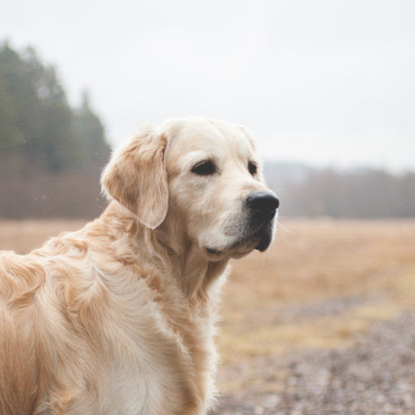
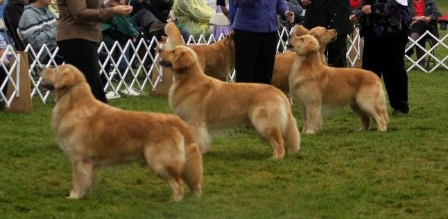

Tõu ajalugu
Kuldne retriiver pärineb 19. sajandi Inglise ja Šotimaa piirimailt.
Kuulub linnukoerte rühma ja kasutatakse lindude kättetoojana. Aretuse
eesmärgiks on olnud luua tõug, kellel on tugev toomise-ja töötahe,
kuulekus ja intelligentsus, alistuvus ning sõbralikkus. Nende omaduste
tõttu on tõug saavutanud suure populaarsuse ka perekoerana. Kuni aastani
1913. registreeriti kuldsed retriiverid sileda- või lainekarvaliste retriiveritena,
keda näituseringides eraldati ainult värvi põhjal. Aastal 1913. palusid
paljud tõust huvitatud kasvatajad luba saada eriregister ja nende
retriiveritele anti nimi kuldne või kollane retriiver. Alles 1920.aastal
jäeti sõna kollane ära ja tõu nimeks sai Kuldne retriiver. Esimese kui ka
teise maailmasõja ajal säilitasid vastutustundlikud kasvatajad oma parimat
aretusmaterjali, et sõja lõppedes jätkata kasvatustööd. Kohe peale teise
maailmasõja lõppu näitustel esinenud kuldsed olid väga erinevad, õnneks
kadusid suuremad erinevused varsti ja näituseringidesse tuli ühtlasem tüüp.
Siiski jäi teatud erinevus põhja ja lõuna kuldsete vahele. Esimesed kuldsed
retriiverid jõudsid Rootsi enne Teist Maailmasõda, kuid info nende koerte kohta
on puudulik. Esimene Kuldne retriiver toodi Eestisse Soomest aastal 1996, selleks
oli emane koer nimega Goldenstep Easy Winning. Esimene pesakond sündis 2. aastat
hiljem, 1998. Kõige arvukam kutsikaasta oli 2007ndal, kui sündis 32 pesakonda.
Tõu iseloomustus
Kuldne retriiver on üks populaarsemaid koeratõuge Ameerika
Ühendriikides. Tõu sõbralik ja tolerantne suhtumine teeb neist
suurepärased pere lemmikloomad ja nende intelligentsus teeb
neist väga võimekad töökoerad. Kuldsed retriiverid on suurepärased
ulukite otsimisel jahimeestele, jälitamisel, salakauba nuusutamisel
õiguskaitseorganite jaoks ning teraapia- ja teenistuskoertena. Nad on
ka loomulikud sportlased ja saavad hästi hakkama sellistes koeraspordialades
nagu agility ja võistluskuulekus. Neid koeri on üsna lihtne koolitada
ja nad saavad läbi peaaegu igas kodus või perekonnas. Nad on lastega
suurepärased ja kaitsevad oma inimesi väga. Kui soovite ustavat, armastavat
ja nutikat kaaslast, peaksite kaaluma ühe neist poegadest oma karja
adopteerimist. Tõul on veel üks potentsiaalne puudus: ta ei ole
kindlasti valvekoer. Ta võib haukuda, kui võõrad ümberringi tulevad,
kuid ärge lootke sellele. Tõenäoliselt liputab ta saba ja välgutab seda
iseloomulikku kuldset naeratust.


Tõu standardid
Kuldsetel retriiveritel on tihe, vetthülgav pealiskarv
ja paks aluskarv. Mõned mantlid on lainelised, mõned on
sirged. Karvased suled esijalgade tagaküljel ja kehaalusel,
raskemad suled rinnal, reite tagaküljel ja sabal.
Kuldseid retriivereid on kõigis kullatoonides,
heledast kuni tumeda kullani. Goldeni paks karv
tähendab palju hooldust. Nende retriiverite näol
on alati sõbralik ilme, keha ideaalselt sümmeetriline
ja nad liiguvad sujuvate liigutustega, läbides vahemaad
pikkade ning võimsate sammudega. Täiskasvanud isaste
kõrgus on 56–61 cm ja kaal 30–34 kg. Täiskasvanud emaste
kõrgus on 51–56 cm ja kaal 27–32 kg.